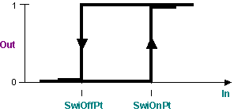
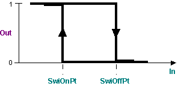

[SWI_2P] On/off 开关，具有可调节的开启和关闭点
功能块 SWI_2P 根据输入信号与开启和关闭点的比较生成二进制输出信号。
SWI_2P 根据输入信号与开关点的比较生成二进制输出信号。
Functioning
SWI_2P 根据输入信号 [In] 与开启点 [SwiOnPt] 和关闭点 [SwiOffPt] 的比较生成二进制输出信号 [Out]。
Enabling and disabling the function
该功能可以通过[EnFnct]启用/disabled。
Direction of control action
开启点 [SwiOnPt] 和关闭点 [SwiOffPt] 的相对相互位置定义了控制动作的方向。
Direct

Reverse

Pins
输入 | 描述 | 数据类型 | 默认值 |
|---|---|---|---|
EnFnct | Enable function 启用该功能。 | 布尔值 | 1 |
0 - 该功能被禁用。 | |||
In | Input | 真实的 | 0.0 |
SwiOnPt | Switch-on point | 真实的 | 0.0 |
如果 [SwiOnPt] ≥ [SwiOffPt]，则控制动作的方向为直接。 | |||
SwiOffPt | Switch-off point | 真实的 | 0.0 |
如果 [SwiOnPt] ≥ [SwiOffPt]，则控制动作的方向为直接。 | |||
输出 | 描述 | 数据类型 | 默认值 |
|---|---|---|---|
Out | Output | 布尔值 | 0 |
0 - No | |||
Application
- Heating and cooling control to disable (add or remove) components.
- Execution of switching functions with known and settable switch-on and switch-off point.
%r.h。SWI_2PH被使用。
Process response
SWI_2P 从第一个处理周期开始使用输入处的待处理值进行处理。如果启动期间值 [In] 位于打开点和关闭点之间，则输出设置为 [Out] = 关闭。